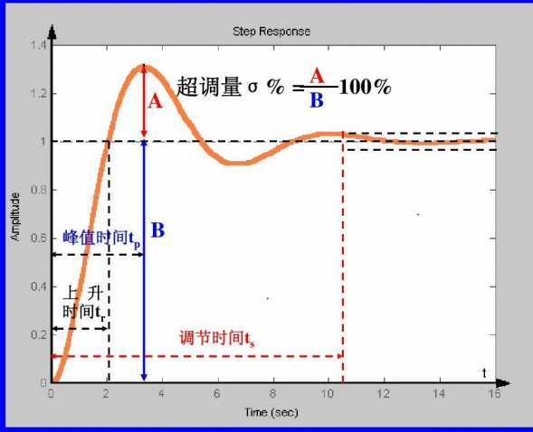

章节要求¶


概念¶
连续系统中所有环节的信号均为时间变量的连续函数。换言之，这些信号在全部时间上都是已知的。
采样系统是对来自传感器的连续信息在某些规定的时间瞬时上进行取值。
数字控制系统是一种以数字计算机为控制器去控制具有连续工作状态的被控对象的闭环控制系统。
模拟信号是时间和幅值上都连续的信号。
脉冲信号是时间上离散而幅值上连续的信号。
保持器接收脉冲信号输入，将其复原为连续阶梯信号。采样频率很高时，复原信号接近原始信号。
系统参数¶
采样周期 T
采样持续时间 \(\tau\)
采样频率 \(f_s=\frac{1}{T}\)
采样角频率 \(\omega_s=2\pi f_s=\frac{2\pi}{T}\)
信号采样与保持¶
采样¶
连续信号 \(f(t)\)
采样串 \(p(t)=1(t)-1(t-\tau)\)
采样信号 \(f^*(t)=f(0)[1(t)-1(t-\tau)]+f(T)[1(t-T)-1(t-T-\tau)]+\cdots\)
令\(\tau\)趋于0，即 \(p(t)=\delta_T(t)=\sum\delta(t-kT)\)，可视为理想采样开关
\(\delta(t)\)为单位脉冲信号，满足 \(\int_{-\infty}^{\infty}\delta(t)dt=1\)
采样公式：
对采样信号的拉氏变换：
保持（恢复）¶
香农采样定理：离散信号能够不失真地恢复原有信号的条件是 \(\omega_s\geq2\omega_{max}\)，\(\omega_{max}\)为原始信号最高频率
Z变换¶
在采样拉氏变换中，取\(z=e^{sT}\)的变量值换，将s的超越函数转换为z的幂级数或z的有理分式，得到z变换
即 \(F(z)=F^*(s)|_{s=\frac{1}{T}lnz}\)
z变换的常用方法：定义法、直接查表法、部分分式法、留数法
Z变换的求解方法¶
1. 定义法¶
\(F(z)=f(0)+f(T)z^{-1}+f(2T)z^{-2}+\cdots=\sum\limits_{k=0}^{\infty}f(kT)z^{-k}\)
2. 部分分式法¶
把\(f(t)\)的拉氏变换\(F(s)\)展成部分分式之和的形式，使每一部分分式对应简单的时间函数，其相应的Z变换已知
Z反变换的求解方法¶
1. 长除法¶
对如\(\frac{z^2+z}{z^2-2z+1}\)这样的式子，分子分母最高次相同，可以直接使用长除法。
对如\(\frac{10z}{(z-1)(z-3)}\)这样的式子，分子分母次数不同，可以用\(\frac{1}{z}\)的长除法。
2. 部分分式法¶
将目标序列分解转换成常用z变换对。
3. 留数法¶
对于序列\(X(z)=\frac{N(z)}{(z-p_1)\cdots(z-p_n)}\)
可以用留数法求其z反变换：\(x(n)=\Sigma Res[X(z)z^{n-1}]_{z=p_k}\)
z变换的性质¶
移位定理¶
- 向左移位 \(Z[f^*(t-pT)]=z^{-p}F(z)\)
- 向右移位 \(Z[f^*(t+pT)]=z^{p}F(z)-\sum\limits_{i=0}^{p-1}f(iT)z^{p-i}\)
初值定理¶
若\(\mathop{lim}\limits_{z\rightarrow\infty}F(z)\)存在，则\(\mathop{lim}\limits_{k\rightarrow0}f(kT)=\mathop{lim}\limits_{z\rightarrow\infty}F(z)\)
终值定理¶
如果F(z)满足下列条件之一：
- F(z)的所有极点在开单位圆内
- F(z)有一个一阶极点在z=1，而其他极点在开单位圆内
则 \(\mathop{lim}\limits_{k\rightarrow{\infty}}f(kT)=\mathop{lim}\limits_{z\rightarrow1}[(1-z^{-1})F(z)]\)
离散系统的数学模型¶
线性差分方程¶
- 一阶前向差分：\(\Delta f(k)=f(k+1)-f(k)\)
- n阶前向差分：\(\Delta^n f(k)=\Delta^{n-1}f(k+1)-\Delta^{n-1}f(k)\)
- 后向差分
用 \(\frac{y[(n+1)T]-y(nT)}{T}\) 代替 \(\frac{dy}{dt}\) ，可以将一阶微分方程近似转化为一阶差分方程
差分方程的求解¶
- 迭代法(递推法)
- Z变换法：对差分方程两边做z变换，带入已知的初始条件
例如：根据z变换的移位性质，\(y[(k+1)T]+2y(kT)=5kT\) 可以变换为 \(z[Y(z)-Y(0)]+2Y(z)=5\frac{Tz}{(z-1)^2}\)
脉冲传递函数¶
在零初始条件下，输出 \(y^*(t)\) 的z变换 \(Y(z)\) 与非零输入 \(r^*(t)\) 的z变换 \(R(z)\) 之比，\(G(z)=\frac{Y(z)}{R(z)}\) 称为脉冲传递函数。
输入输出关系 \(Y(z)=G(z)R(z)\)
G(s)表示线性环节本身的传递函数，G(z)表示线性环节和采样器两者组合体的传递函数。
G(z)不是通过G(s) 置换两个自变量而成，而是通过求G(s)的Z变换而来
连续系统中传递函数 \(G(s)\) 等于单位脉冲响应 \(g(t)\) 的拉氏变换
离散系统中脉冲传递函数 \(G(z)\) 等于系统单位脉冲响应序列 \(K(nT)\) 的z变换系统加权序列
脉冲传递函数的求法¶
脉冲传递函数的推导¶
开环系统¶
- 两个串联环节间没有采样器的连接
- 两个串联环节间有采样器的连接，且采样器同步工作
- 带零阶保持器的开环系统的脉冲传递函数
闭环反馈环节¶
视察法:若前向通道(环内)中有一实际的采样器存在，就可用“视察法”直接求Y(z) 。\(Y(z)=\frac{G_f(z)}{1-G_0(z)}\)
其中\(G_0(z)\)为开环脉冲传递函数（环可以从任一采样器断开，沿信号方向走一周而构成) ; \(G_f(z)\)为前向通路中输出量的Z变换
状态空间模型¶
- 连续状态空间模型
- 离散状态空间模型
建立状态空间模型¶
- 由差分方程得到离散状态空间模型
- 由连续状态空间模型得到离散状态空间模型
\(\mathop{x}\limits^.(t)=Ax(t)+B\)变换为\(x(k+1)=G(T)x(k)+H(T)u(k)\), 其中\(G(T)=e^{AT}, H(T)=\int_0^Te^{A\tau}Bd\tau\)
离散系统的稳定性和稳态误差¶
s域到z域的映射¶
基本映射关系: \(z=e^{sT}, s=\sigma+j\omega\)
代入得: \(z=e^{(\sigma+j\omega)T}=e^{\sigma T}\cdot e^{j\omega T}=e^{\sigma T}\angle \omega T\)
-
s平面虚轴映射为z平面的单位圆
-
s平面角频率 \(\omega\) 相差采样频率 \(\omega_s\) 整数倍的所有点, 映射到z平面上同一点
-
s平面上 \(-\frac{\omega_s}{2}\leq\omega\leq\frac{\omega_s}{2}\) 范围内称为主带
几个特殊的映射:
- 虚轴映射到单位圆
- 主带左半部分映射到单位圆内，主带右半部分映射到单位圆外
- s平面实轴的平行线（等频率线）映射为z平面内的原点出发的射线（等\(\omega\)线）
- s平面虚轴平行线（等衰减率线）映射为z平面内以原点为圆心的圆
- s平面原点出发的射线（等阻尼比轨迹）映射为z平面内原点出发，（1，0）点为终点的一条螺旋线
稳定性理论的移植¶
定义: 若离散系统在有界输入序列作用下，其输出序列也是有界的，则称该离散系统是稳定的。
时域中, 线性定常差分方程: \(c(k)+\sum\limits_{i=1}^na_ic(k-i)=\sum\limits_{j=0}^mb_jr(k-j)\)
对应齐次方程: \(c(k)+\sum\limits_{i=1}^na_ic(k-i)=0\)
对应特征方程: \(\alpha^n+a_1\alpha^{n-1}+\cdots+a_n=0\)
线性定常离散系统系统稳定的充分必要条件是差分方程的所有特征根的模满足: \(|\alpha_i|\textless1, i=1,2,\cdots,n\)
z域中, 系统稳定的充分必要条件是特征方程(z域)的所有特征根在单位圆内。
求解方法¶
- 直接求取特征方程的根
- 根轨迹法：根轨迹图绘制方法与s域相同，但稳定条件为根轨迹在单位圆内
- 变换平面法：\(z=\frac{1+w}{1-w}\) 将z平面变换为w平面, 在w平面上可以使用劳斯判据
离散系统的稳态误差¶
离散系统的动态性能分析¶

动态性能指标: 上升时间, 峰值时间, 超调量, 调节时间, 稳态误差……
瞬态响应的求解¶
数字系统设计方法¶
-
模拟化（连续化）设计方法：先设计校正装置的传递函数D(s)，然后采用某种离散化方法，将它变成计算机算法。
-
数字化（离散化）设计方法：已知被控对象的传递函数或特性G(Z)，根据所要求的性能指标，设计数字控制器
模拟化设计方法¶
常用：前/后向差分法，零极点匹配法，双线性变换法，冲激响应不变法，零阶保持法
前向差分法¶
利用级数展开，可得\(z=e^{sT}=1+sT+\cdots\approx1+sT\), \(s=\frac{z-1}{T}\)
\(s=\frac{z-1}{T}\) 代入D(s)可得D(z)
这种方法将s域左半平面映射为z域z<1范围, 包含不稳定区域, 离散系统可能不稳定. 不存在频率混叠, 但存在畸变.
后向差分法¶
同样用级数展开, \(z=\frac{1}{e^{-sT}}\approx\frac{1}{1-sT}\)，可得\(s=\frac{z-1}{Tz}\)，代入D(s)可得D(z)
这种方法将s域左半平面映射为z域以0.5为圆心, 0.5为半径的圆, 离散系统稳定性不变. 不产生混叠, 但存在畸变.
零极点匹配法¶
先将D(s)化为零极点形式 \(D(s)=\frac{K\prod\limits^m_{i=1}(s-z_i)}{\prod\limits^n_{j=1}(s-p_j)}\), 对应的\(D(z)=\frac{\prod\limits^m_{i=1}(z-e^{z_iT})}{\prod\limits^n_{j=1}(z-e^{-p_jT})}(z+1)^{n-m}\cdot K\)
双线性变换法¶
由lnz的级数展开得出，\(s=\frac{2}{T}\frac{z-1}{z+1}\)
相当于用梯形代替积分, 不产生频率混叠，且s左半平面映射到z域单位圆内. 频率产生畸变, 且高频有较大畸变.
数字化设计方法¶
根轨迹设计方法¶
z域解析设计方法¶
拍：一个采样周期
最少拍系统：在典型输入作用下，能以有限拍结束响应过程，且在采样时刻无稳态误差的离散系统。
最少拍系统的设计目标：在系统稳定的基础上，
- 对典型输入信号的稳态偏差为零（在采样时刻上）
- 对典型输入信号的过渡过程最短（最少拍）
- 控制器是物理可实现的。
稳定性¶
如果G(z)中包含有单位圆上或单位圆外的零点或极点时，必须通过选择Φ(z) ，使它们能抵消G(z)中的不稳定零,极点。
-
在Φe(z)=1-Φ(z)中，以零点的形式把G(z)的不稳定极点包含在内；
-
在Φ(z)中，以零点的形式把G(z)的不稳定零点包含在内
稳态误差¶
三种典型输入(阶跃, 斜坡, 加速度)的z变换式通式为: \(R(z)=\frac{A(z)}{(1-z^{-1})^m}\), 三种响应的m依次为1, 2, 3
误差的脉冲传递函数为\(E(z)=R(z)[1-\Phi(z)]=\frac{A(z)[1-\Phi(z)]}{(1-z^{-1})^m}\)
要使\(e_{ss}=0\), 由终值定理可以求得\(1-\Phi(z)=F(z)(1-z^{-1})^m\), 不妨取F(z)=1, 此时\(\Phi(z)\)所有极点都在z平面的零点
最少拍¶
\(1-\Phi(z)=(1-z^{-1})^m\), 对三种输入, 分别取m=1, 2, 3即可